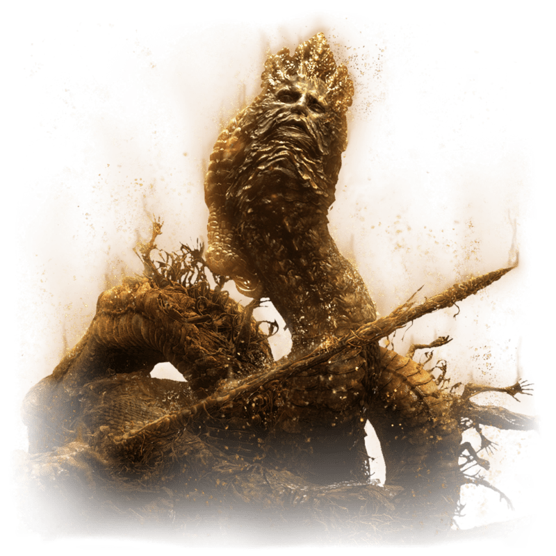
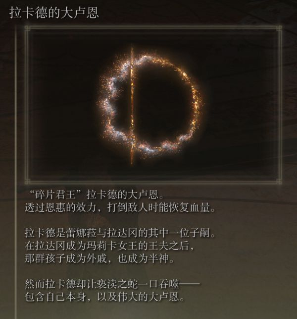

拉卡德_Rykard
喔…… 還不壞啊。 你啊…… 成為我蛇王的祭品吧， 成為我蛇王的族人吧， 一起吞噬神祇吧！ 一起吞噬神祇吧！
格密爾火山是作為交界地監獄而存在的，並負責對有罪之人的審批。拉卡德司法官是格密爾火山官邸的主人，是個毫無憐憫心的法官，也是許多拷問官的長官。他是個如蛇一般，令人感冒的男人。 拉卡德是蕾娜菈與拉達岡的其中一位子嗣。在拉達岡成為瑪莉卡女王的王夫之後，那群孩子成為外戚，也成為半神。然而拉卡德卻讓褻瀆之蛇一口吞噬——包含自己本身，以及偉大的大盧恩。為了永遠地生存、吞噬，不停地成長，拉卡德成為了大蛇：“我很明了，褻瀆之路有多麼險峻——害怕犯下罪孽，哪能走這條路？”

